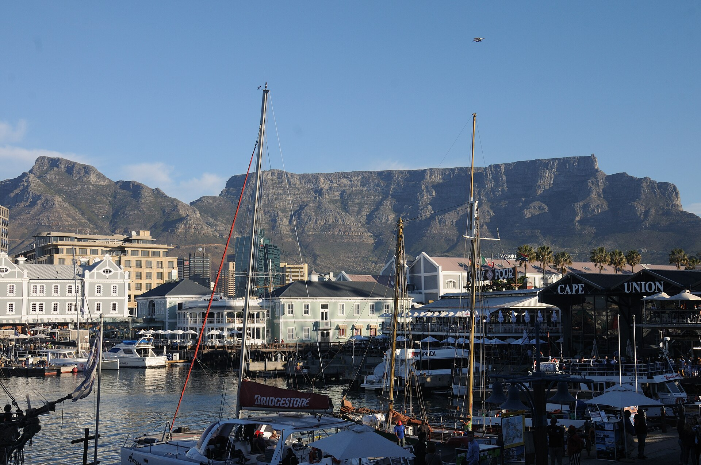

Best Spots to Hang Out in Cape Town Like a Local: Neighbourhoods, Markets & Tidal Pools
Ask five Capetonians what their ideal Saturday looks like and you will rarely hear them mention a shopping mall. Instead, life in the Mother City revolves around morning surf checks in Muizenberg, farm markets overlooking the ocean, shaded courtyard cafés on Kloof Street, and watching the sun sink into the Atlantic from a granite boulder. Here is where to hang out in Cape Town if you want to experience the city like you live here.

Local Cape Town Hangouts By Vibe
- Bohemian Coastal Morning: Muizenberg Surfer’s Corner → St James Coastal Walkway → Kalk Bay Main Road & Harbour.
- Saturday Food & Produce Market: Oranjezicht City Farm Market (Granger Bay) or Neighbourgoods Market at the Old Biscuit Mill (Woodstock).
- Afternoon Wine With a View: Constantia Nek & Beau Constantia / Groot Constantia (only 20 minutes from the city bowl).
- Golden Hour Sunset Hangout: Saunders’ Rocks Tidal Pool (Bantry Bay) or Kloof Street’s leafy courtyards.
1. Muizenberg Surfer’s Corner to Kalk Bay Main Road
On the warmer False Bay side of the peninsula, a morning spent walking between Muizenberg and Kalk Bay is a weekly ritual for locals. Start at Surfer’s Corner in Muizenberg—where longboarders of every age paddle out in front of the famous primary-coloured wooden beach huts—and grab a flat white along Beach Road while watching the waves roll in.
From there, follow the oceanfront concrete path past the railway line (the historic Southern Line train runs right along the sea spray!) through St James and Dalebrook into Kalk Bay. Once a quiet 19th-century whaling and fishing village, Kalk Bay’s Main Road is packed with independent bookshops, vintage clothing stores, antique arcades, salt-water ice cream parlours, and harbourside tables at the Brass Bell where waves literally splash against the dining room windows at high tide.
2. Kloof Street, Gardens & Tamboerskloof Courtyards
Running straight up from the city centre toward the saddle between Table Mountain and Lion’s Head, Kloof Street is the social spine of the City Bowl. By day, locals work from laptops at indie coffee roasteries and browse De Waterkant and Gardens boutiques; by 5:00 PM, the Victorian heritage buildings and bougainvillea-draped courtyards fill up for sundowners and dinner.

Also keep an eye on the calendar: if your trip falls on the first Thursday of the month ("First Thursdays"), art galleries, wine bars, and restaurants along Bree Street, Loop Street, and Church Street stay open late into the evening, turning the inner city into a lively pedestrian street festival.
3. Saturday Morning at the Oranjezicht City Farm Market (OZCF)
If you are in Cape Town over a weekend, skip your hotel breakfast and head down to Granger Bay (right beside the V&A Waterfront overlooking the Atlantic) for the Oranjezicht City Farm Market—open Saturdays, Sundays, and Wednesday evenings in summer.

Originally started to support an urban community farm in Oranjezicht, it has grown into Cape Town’s favourite weekend hangout. Dogs on leads, families, chefs, and surfers gather under the canvas tents for wood-fired bagels, fresh West Coast oysters, heirloom tomatoes, protea bouquets, and fresh sugarcane juice while cargo ships glide across Table Bay.
4. Saunders’ Rocks Tidal Pool & the Sea Point Promenade
Stretching along the Atlantic Ocean from Mouille Point lighthouse to Bantry Bay, the paved Sea Point Promenade is where all of Cape Town comes together in the late afternoon—runners, rollerbladers, grandparents walking dogs, and families eating soft-serve ice cream on the sea wall.
At the southern end of the promenade, tucked into the wind-free pocket of Bantry Bay, lies Saunders’ Rocks. Around 6:30 PM in summer, dozens of locals bring a blanket, a flask, or a takeaway pizza to perch on the sun-warmed granite rocks beside the tidal pool and watch the sky turn fiery pink over the Atlantic.
5. Constantia’s Leafy Greenbelts & Hilltop Wine Terraces
You don’t even have to leave Cape Town’s suburbs to sit in a world-class vineyard. Just 20 minutes south of the city centre behind Table Mountain lies the Constantia Valley—where wine has been made continuously since 1685.

Locals start with a morning walk along the shaded Alphen Trail or Constantia Nek greenbelts, followed by a late lunch or wine tasting at Groot Constantia, Klein Constantia (famous for its historic sweet Vin de Constance), or high up on the glass-walled terrace at Beau Constantia looking all the way out to False Bay.
Experience Cape Town with a local friend, not a tour bus.
Whether you want a relaxed half-day exploring Bo-Kaap, Table Mountain, and Constantia wine farms, or a full day meandering from Kalk Bay to Cape Point, let’s design a private itinerary around your pace.